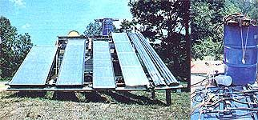

LEFT : The candidates for our solar water heater comparison are mounted in place and ready for their days in the sun. Shown from left to right are the Suntree Solar, the SolaRoll, the BTU Bucket, the unknown /and subsequently eliminated/ commercial panel, MOTHER's singleplate in-line and MOTHER's double-plate in-line (both copper-equipped/. RIGHT: The water to ""feed"" the entire collector lineup was drawn from a 55gallon drum by five pumps, and then returned to the top of the reservoir through valves.